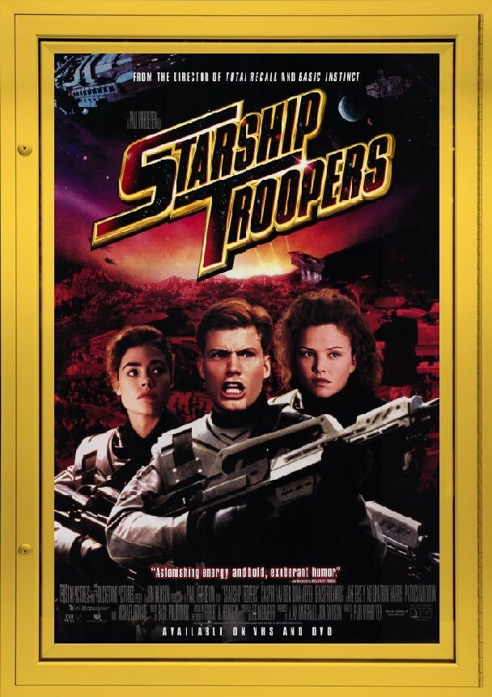

In honor of those who serve in the military, I’d like to commemorate the brave men and women who do their part in the Federation. This film is one of the most satirical movies I have ever seen in my life and that’s why I love it so much.
The movie wastes no time and brings you straight into the main conflict of the movie. The military Federation is in the middle of a conflict that spans across our galaxy, the enemy: Bugs. Now these aren’t your average insects, not by a long shot. Some are the size of a dinner table, some of them are at least 8 feet tall and then are some bugs that are the size of four-story buildings! The film centers around a high school kid named Johnny Rico, who has just graduated high school and decides to join the military just as the conflict with the Bugs starts to intensify. As for the rest of the movie, you’ll have to find out for yourself.
Everyone in this movie is fantastic, hands down. Rico’s played by Casper Van Dien, who’s mostly known for b-movie roles including PYTHON, meanwhile Dina Meyer, who plays Rico’s fellow cadet Dizzy, has made appearances on several famous TV shows like MONK, and BURN NOTICE, lastly, this I can’t help but laugh, the movie also stars Neil Patrick Harris as Johnny’s best friend Carl. I think it’s hysterical, the contrast between his performance in this movie and his role as Barney Stinson in HOW I MET YOUR MOTHER.
The society that the movie establishes may seem fascist, but the way it’s presented, how satirical it can be at times, lets it off the hook in my opinion. It mainly focuses on the pros of what this society brings and how it unifies people, which isn’t a bad thing because again the film plays it as satirical so it doesn’t take itself too seriously and so people don’t get upset over this movie (but I’m sure people will get upset anyway). Besides the fascism, the action in this film is what it has going for it. Seeing a bunch of soldiers in a massive shootout against decently animated CGI alien bugs is pretty sweet.
So, as long as you don’t have a light stomach and totally okay with a satirical fascist society, you should definitely check out STARSHIP TROOPERS at your earliest convenience.
Final Rating: